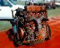

The F-Head 134 inline 4 was the standard engine in the CJ-5 and
CJ-6 from their introduction until 1971. The F-Head was the only
engine ever used in the CJ-3B. The engine also saw action in
starting in the middle of 1950 in Willys Wagons and Willys Pickups.
It was also used in FC trucks.
The F-Head 134 uses a cast iron block and head with mechanical
lifters and 3 main bearings. Two versions of the F-Head were
available most years, the output specifications are the same
for both, the compression is different. The intake valves are
in the head, but the exhaust valves are in the block. The
valve configuration makes the F-Head engine taller than the L-Head
because the L-Head has the intake and exhaust valves in the block.
New engine compartments had to be designed to make room for the
taller engine. The CJ-5 and CJ-3B were designed with this engine
in mind. It is fairly common to see a F-Head engine swapped into
a CJ-2A or CJ-3A. Normally a section of the hood is cut out to
make room for the carburetor.
There is a lot of confusion about the name of the F-Head engine.
The F represents the valve configuration where one set of valves
is in the head and one is in the block. The "F" in F-Head does
not stand for "Flat" nor does it stand for "Ford". Other makes
of vehicles used flat head engines and some people think the
F-Head stands for flat head. Another source of confusion is
Ford built some of their WWII GPWs with bolts with an "F" on the
head so the parts could be distinguished from the Willys MB. They
used F head bolts to build the GPW, but this is not related to the
F-Head engine.
The main difference between different versions of the F-Head engine
is the compression. The early F-Heads used between '50-'60 in Willys
Wagons, Willys Pickups, CJ-5s, CJ-3B, etc had a low compression F-Head
standard. The Willys Pickup only used this engine from '50-'56 and
in '59.
| Hurricane F-Head 134 I4 |
|---|
| Bore x Stroke | 3.125" x 4.375" |
| Displacement | 134.2 (2.199L) |
| Compression Ratio | 6.9:1 |
| Horsepower (gross) | 72@4000rpm |
| Torque (gross) | 114@2000 |
| Main Bearings | 3 |
| Valve Configuration | F-head |
| Fuel | 1-bbl Carter |
The "High Altitude" option was the same engine with a higher
compression ratio.
| Hurricane F-Head 134 I4 |
|---|
| Bore x Stroke | 3.125" x 4.375" |
| Displacement | 134.2 (2.199L) |
| Compression Ratio | 7.4:1 |
| Horsepower (gross) | 72@4000rpm |
| Torque (gross) | 114@2000 |
| Main Bearings | 3 |
| Valve Configuration | F-head |
| Fuel | 1-bbl Carter |
Between 1961 and 1970, the high compression version became standard
and the low compression version was optional. A slight horse power
gain was realized. The Willys Pickup used the 7.4:1 compression
engine as standard and a 7.8:1 compression engine as optional from
'60-'62.
| Hurricane F-Head 134 I4 |
|---|
| Bore x Stroke | 3.125" x 4.375" |
| Displacement | 134.2 (2.199L) |
| Compression Ratio | 7.4:1 |
| Horsepower (gross) | 75@4000rpm |
| Torque (gross) | 114@2000 |
| Main Bearings | 3 |
| Valve Configuration | F-head |
| Fuel | 1-bbl downdraft |
The optional low compression F-Head used from '61 until '70.
| Hurricane F-Head 134 I4 |
|---|
| Bore x Stroke | 3.125" x 4.375" |
| Displacement | 134.2 (2.199L) |
| Compression Ratio | 6.9:1 |
| Horsepower (gross) | 75@4000rpm |
| Torque (gross) | 114@2000 |
| Main Bearings | 3 |
| Valve Configuration | F-head |
| Fuel | 1-bbl downdraft |
In 1971, a low compression version was the only one available
in the 49 state version. A California version was high compression.
| Hurricane F-Head 134 I4 |
|---|
| Bore x Stroke | 3.125" x 4.375" |
| Displacement | 134.2 (2.199L) |
| Compression Ratio | 6.7:1 |
| Horsepower (gross) | 75@4000rpm |
| Torque (gross) | 114@2000 |
| Main Bearings | 3 |
| Valve Configuration | F-head |
| Fuel | 1-bbl downdraft |
The California high compression F-Head available in 1971.
| Hurricane F-Head 134 I4 |
|---|
| Bore x Stroke | 3.125" x 4.375" |
| Displacement | 134.2 (2.199L) |
| Compression Ratio | 7.4:1 |
| Horsepower (gross) | 75@4000rpm |
| Torque (gross) | 114@2000 |
| Main Bearings | 3 |
| Valve Configuration | F-head |
| Fuel | 1-bbl downdraft |
Contributors
Photos courtesy Dan Bever and Derek Redmond.

{kind=link}